승강기산업기사 (2020-06-06 기출문제)
1과목: 승강기개론
1. 에너지 분산형 완충기에 대한 설명으로 틀린 것은?
- 작동 후에는 영구적인 변형이 없어야 한다.
- 2.5gn을 초과하는 감속도는 0.04초보다 길지 않아야 한다.
- 완충기 작동 후 완충기가 정상 위치에 복귀되기 전에 엘리베이터가 정상적으로 운행될 수 있어야 한다
- 카에 정격하중을 싣고 정격속도의 115%의 속도로 자유 낙하하여 완충기에 충돌할 때, 평균감속도는 1gn 이하이어야 한다.
(정답률: 78%)

2. 다음 중 카 바닥의 구성요소가 아닌 것은?
- 에이프런
- 안전난간대
- 하중검출장치
- 플로러베이스
(정답률: 90%)
3. 다음 그림과 같은 로핑 방법은?
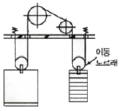
- 1:1 로핑
- 2:1 로핑
- 3:1 로핑
- 4:1 로핑
(정답률: 87%)
4. 에스컬레이터의 브레이크 시스템에 대한 설정으로 틀린 것은?
- 균일한 감속에 따른 안정감이 있어야 한다.
- 전압 공급이 중단되었을 때 자동으로 작동해야 한다.
- 브레이크 시스템의 적용에는 의도적 지연이 없어야 한다.
- 제어시스템이 에스컬레이터를 정지시키기 위해 즉시 차단 시퀀스를 시작하면, 이는 의도적 지연으로 간주된다.
(정답률: 76%)
5. 에너지 분산형 완충기가 스프링식 또는 중력 복귀실일 경우, 최대 몇 초 이내에 완전히 복귀되어야 하는가?
- 30
- 50
- 90
- 120
(정답률: 56%)
6. 승강로에 대한 설명으로 틀린 것은?
- 승강로에는 1대 이상의 엘리베이터 카가 있을 수 있다.
- 승강로 내에 설치되는 돌출물은 안전상 지장이 없어야 한다.
- 승강로는 누수가 없고 청결상태가 유지되는 구조이어야 한다.
- 유압식 엘리베이터의 잭은 카와 별도의 승강로 내에 있어야 한다.
(정답률: 80%)
7. 균형 체인 또는 균형로프의 역할로 적절하지 않은 것은?
- 승차감을 개선하기 위해 설치한다.
- 착상오차를 개선하기 위해 설치한다.
- 고층용 엘리베이터에서 소음을 개선하기 위해 설치한다.
- 카와 균형추 상호간의 위치변화에 따른 와이어로프 무게를 보상하기 위한 것이다.
(정답률: 75%)
8. 블리드 오프 유압회로에서 카가 하강 시에 유압잭에서 오일 탱크로 되돌아가는 작동유의 유량을 제어하는 밸브는?
- 감압 밸브
- 체크 밸브
- 릴리프 밸브
- 하강 유량 제어 밸브
(정답률: 82%)
9. 카의 추락방지안전장치(비상정지장치)가 작동할 때 균형추나 와이어로프 등이 관성에 의해 튀어 오르는 것을 방지하기 위하여 설치하는 장치는?
- 과전류차단기
- 과부하방지장치
- 개문출발 방지장치
- 튀어오름 방지장치(록다운 비상정지장치)
(정답률: 91%)
10. 엘리베이터를 카와 조작방식에 따라 분류할 때 반자동식에 해당하지 않는 것은?
- 직접식
- 신호 방식
- 카 스위치 방식
- 카드 조작 방식
(정답률: 80%)
11. 가변전압 가변주파수 제어방식에서 직류를 교류로 바꾸어 주는 방치는?
- 인버터
- 리액터
- 컨덕터
- 컨버터
(정답률: 84%)
12. 카 추락방지안전장치(비상정지장치)가 작동될 때, 무부하 상태의 카 바닥 또는 정격하중이 균일하게 분포된 바닥은 정상적인 위치에서 몇 %를 초과하여 기울어지지 않아야 하는가?
- 3
- 5
- 7
- 10
(정답률: 83%)
13. 카에는 자동으로 재충전되는 비상전원공급장치에 의해 몇 lx 이상의 조도로 몇시간 동안 전원이 공급되는 비상들이 있어야 하는가?
- 2 1x, 1시간
- 2 1x, 2시간
- 5 1x, 1시간
- 5 1x, 2시간
(정답률: 64%)
14. 무빙워크의 경사도는 몇 도 이하이어야 하는가?
- 8°
- 10°
- 12°
- 15°
(정답률: 84%)
15. 엘리베이터가 최종단층을 통과하였을 때 구동기를 신속하게 정지시키며, 운행을 불가능하게 하는 안전장치는?
- 피트 정지 스위치
- 파이널 리미트 스위치
- 종단층 장제 감속 장치
- 추락방지안전장치(비상정지장치)
(정답률: 84%)
16. 엘리베이터 과속조절기(조속기) 로프의 최소 파단 하중은 권상 형식 과속조절기의 마찰계수 µmax0.2를 고려하여 과속조절기가 작동될 때 로프에 발생하는 인장력에 몇 이상의 안전율을 가져야 하는가?
- 2
- 4
- 6
- 8
(정답률: 70%)
17. 다음 중 엘리베이터의 주행안내(가이드) 레일에 대한 설명으로 적절하지 않은 것은?
- 카의 기울어짐을 방지하는 장치이다.
- 엘리베이터의 안전한 운행을 보장하기 위해 부과되는 하중 및 힘에 견뎌야 한다.
- 건물 구조의 움직임이 주행안내 레일 연결에 주는 영향이 최소화되도록 해야 한다.
- 추락방지안전장치(비상정지장치)의 제동력은 주행안내 레일의 특정 부분에 주는 영향이 최소화되도록 해야 한다.
(정답률: 56%)
18. 소방구조용(비상용) 엘리베이터에 대한 설명으로 맞는 것은?
- 소방운전 시 모든 승강장의 출입구마다 정지할 수 있어야 한다.
- 승강로 및 기계실 조명은 어떠한 경우에도 수동으로만 점등되어야 한다.
- 승강장문이 여러 개일 경우 방화 구획된 로비가 하나 이상의 승강장문 전면에 위치해야 한다.
- 소방관 접근 지정층에서 소방관이 조작하여 엘리베이터 문이 닫힌 이후부터 90초 이내 가장 먼 층에 도착되어야 한다.
(정답률: 71%)
19. 일반적으로 엘리베이터에 사용하는 주로프의 차단강도는 약 몇 kgf/mm2 정도인가?
- 70~80
- 85~95
- 100~125
- 135~165
(정답률: 67%)
20. 유압식 엘리베이터에 적용되는 유량 제한기(유량제한장치)의 기준으로 틀린 것은?
- 실린더에 압축 이음으로 연결되어야 한다.
- 실린더의 구성 부품으로 일체형이어야 한다.
- 직접 및 견고하게 플랜지에 설치되어야 한다.
- 실린더 근처에 짧고 단단한 배관으로 용접되고 플랜지 또는 나사 체결되어야 한다.
(정답률: 56%)
2과목: 승강기설계
21. 엘리베이터의 지진에 대한 대책으로 가장 적절하지 않은 것은?
- 지진이나 기타 진동에 의해 주로프가 도르래에서 이탈하지 않도록 해야 한다.
- 지진 시 엘리베이터를 건물의 최상층에 정지시키는 관제운정장치를 설치하는 것이 바람직하다.
- 지진 하중에 대한 구조 부분에 필요한 강도가 확보되어 위험한 변형이 생기지 않아야 한다.
- 승강로 내에는 레일 브라켓 등 구조상 승강로 내에 설치하여야 할 것을 제외하고는 돌출물을 설치하지 말아야 한다.
(정답률: 83%)
22. 균형추 또는 평형추에 추락방지안전장치(비상정지장치)를 설치해야 하는 경우로 맞는 것은?
- 균형추의 무게가 2000kg을 초과하는 경우
- 균형추측에 유입완충기의 설치가 불가능한 경우
- 승강로의 피트 하부 상시 출입 통로로 사용하는 경우
- 엘리베이터의 정격속도가 300m/min를 초과하는 초고속 엘리베이터
(정답률: 84%)
23. 기계실 작업공간의 바닥 면은 몇 lx 이상을 밝히는 영구적으로 설치된 전기조명이 있어야 하는가?
- 5
- 50
- 100
- 200
(정답률: 77%)
24. 엘리베이터 안정장치 중 리미트 스위치의 형식이 아닌 것은?
- 기계적 조작식
- 광학적 조작식
- 자기적 조작식
- 턴버클
(정답률: 78%)
25. 권상기에 대한 설명으로 옳은 것은?
- 권상기 도르래와 로프의 권부각이 클수록 미끄러지기 쉽다.
- 권상기 도르래의 지름은 로프 지름의 20배 이상으로 하여야 한다.
- 도르래의 로프 홈은 U홈을 사용하는 것이 마찰계수가 커서 유리하다.
- 도르래의 로프 홈은 U홈과 V홈의 중간 특성을 가지며 트랙션 능력이 큰 언더킷 홈을 주로 사용한다.
(정답률: 77%)
26. 엘리베이터용 전동기의 구비요건으로 적절하지 않은 것은?
- 기동전류가 클 것
- 기동토크가 클 것
- 회전부의 관성모멘트가 적을 것
- 빈번한 운전에 대한 열적 특성이 양호할 것
(정답률: 78%)
27. 로프식 권상기의 허용응력이 4kN/cm2이고, 재료의 인장강도가 40kN/cm2일 때 안전율은 약 얼마인가?
- 5
- 10
- 13.8
- 16.7
(정답률: 81%)
28. b×h=6×7(m)의 삼각형 도심을 통과하는 축에 대한 단면 2차 모멘트는 약 몇 m4인가?
- 24.5
- 47.17
- 49
- 57.17
(정답률: 38%)
29. 사이리스터를 사용하여 교류로 변환한 후 전동기에 공급하고, 사이리스터의 점호각을 변경하여 직류전압을 바꿔 회전수 조절하는 제어방식은?
- 교류 귀환 제어방식
- 워드 레오나드 제어방식
- 정지 레오나드 제어방식
- 가변전압 가변주파수 제어방식
(정답률: 58%)
30. 에스컬레이터의 배열방식과 그 특징에 대한 설명으로 틀린 것은?
- 복렬형은 설치면적이 증가한다.
- 복렬병렬형은 승강장을 찾기가 혼란스럽다.
- 교차형은 승강 하강 모두 연속적으로 갈아탈 수 있다.
- 단열중복형은 매 층마다 특정 장소로 유도할 수 있다.
(정답률: 61%)
31. 교통량 계산 시 출근시간의 수송능력 목표치(집중률)가 가장 큰 건물은? (단, 역사(지하철역 등)와 가까운 경우는 제외한다.)
- 공공건물
- 전용건물
- 임대건물
- 준전용건물
(정답률: 69%)
32. 코일스프링에서 스프링 지수는 C, 스프링의 평균지름을 D, 소선의 지름을 d, C에 대한 응력수정계수를 K라 할 때 관계식으로 맞는 것은?
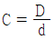
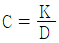
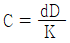
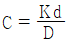
(정답률: 66%)
33. 재료의 탄성한도, 허용응력, 사용응력 사이의 관게로 적절한 것은?
- 탄성한도＞허용응력≥사용응력
- 탄성한도≥사용응력≥허용응력
- 탄성한도≥사용응력＞허용응력
- 허용응력≥탄성한도＞사용응력
(정답률: 72%)
34. 도어 인터록에 대한 설명으로 틀린 것은?
- 도어스위치로 구성되어 있다.
- 승강장 도어의 열림을 방지하는 장치이다.
- 도어 정비를 위하여 도어 록은 일반 공구를 사용하여 쉽게 풀리고 잠길 수 있어야 한다.
- 카가 정지하지 않는 층의 도어는 전용열쇠를 사용하지 않으면 열리지 않도록 해야 한다.
(정답률: 82%)
35. 정격속도가 150m/min 엘리베이터가 종단층의 강제감속장치에 의해 감속한 속도가 1⑤m/min일 때, 완충기의 필요 최소행정은 약 몇 mm인가? (단, 중력가속도는 9.8m/s2으로 한다.)
- 100
- 152
- 207
- 270
(정답률: 48%)
36. 소방공구용(비상용) 엘리베이터는 정전 시 몇 초 이내에 운행에 필요한 전력용량을 자동적으로 발생시킬 수 있어야 하는가?
- 30
- 60
- 90
- 120
(정답률: 77%)
37. 엘리베이터 카의 자중이 1500kg, 적재하중이 1000kg, 오버밸런스가 50%일 때, 균형추의 무게는 몇 kg인가?
- 1000
- 1500
- 2000
- 2500
(정답률: 81%)
38. 다음 내열 등급의 문자 표시 중 E종보다 내열등급이 낮은 것은?
- A종
- B종
- F종
- H종
(정답률: 71%)
39. 승강장문에 대한 설명으로 틀린 것은? (단, 수직 개폐식 승강장문은 제외한다.)
- 승강장문이 닫혀 있을 때 문짝 간 틈새는 6mm 이하로 가능한 작아야 한다.
- 승강장문이 닫혀 있을 때 문짝과 문틀(추면) 사이의 틈새는 6mm 이하로 가능한 작아야 한다.
- 승강장문이 닫혀 있을 때 문짝과 문턱 사이의 틈새가 마모될 경우에는 15mm까지 허용될 수 있다.
- 승강장문이 닫혀 있을 때 문짝 간 틈새는 움푹 들어간 부분이 있다면 그 부분의 안쪽을 측정한다.
(정답률: 77%)
40. 주행 안내(가이드) 레일의 선정기준으로 틀린 것은?
- 지진 발생 시 수직하중에 대한 탄성한계를 넘지 않도록 한다.
- 승객용 엘리베이터는 카의 편중 적재하중에 따른 회전모멘트를 고려할 필요가 없다.
- 추락방지안전장치(비상정지장치) 작동 시에는 주 안내(가이드) 레일에 걸리는 좌굴하중을 고려한다.
- 균형추에 추락방지안정장치(비상정지장치)가 있는 경우에는 균형추에 3K 또는 5K의 주행안내 레일은 사용할 수 없다.
(정답률: 75%)
3과목: 일반기계공학
41. 비틀림 모멘트(T)와 굽힘 모멘트(M)를 받는 재료의 상당 비틀림(Te)를 나타내는 식은?
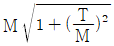
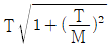
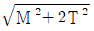
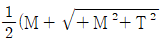
(정답률: 59%)
42. 다음 중 지름 10mm 원형 단면에서 가장 큰 값은?
- 단면적
- 극관성 모멘트
- 단면계수
- 단면 2차 모멘트
(정답률: 55%)
43. 양끝을 고정한 연강봉이 온도 20℃에서 가열되어 40℃가 되었다면 재료 내부에 발생하는 열응력은 몇 N/cm2인가? (단, 세로탄성계수는 2100000 N/cm2 신팽창계수는 0.000012/℃이다.)
- 50.4
- 504
- 544
- 5444
(정답률: 59%)
44. 한쪽 또는 양쪽에 기울기를 갖는 평판 모양의 쇄기로서 인장력이나 압축력을 받는 2개의 축을 연결하는데 주로 사용되는 결합용 기계요소는?
- 키
- 핀
- 코터
- 나사
(정답률: 77%)
45. 다음 중 변형률(Strain)의 종류가 아닌 것은?
- 세로 변형률
- 가로 변형률
- 전단 변형률
- 비틀림 변형률
(정답률: 69%)
46. 피복야크 용접봉에서 피복제 역할이 아닌 것은?
- 용융 금속을 보호한다.
- 아크를 안정되게 한다.
- 아크의 세기를 조절한다.
- 용착금속에 필요한 합금원소를 첨가한다.
(정답률: 72%)
47. Fe-C 평형상태도에서 공정점의 탄소함유량은 몇 %인가?
- 0.86
- 1.7
- 4.3
- 6.67
(정답률: 51%)
48. 작동유의 점도와 관계없이 유량을 조정할 수 있는 밸브는?
- 셔틀 밸브
- 체크 밸브
- 교축 밸브
- 릴리프 밸브
(정답률: 53%)
49. 두랄루민의 주요 성분원소로 옳은 것은?
- 알루미늄-구리-니켈-철
- 알루미늄-니켈-규소-망간
- 알루미늄-마그네슘-아연-주석
- 알루미늄-구리-마그네슘-망간
(정답률: 69%)
50. 너트의 종류 중 한쪽 끝부분이 관통되지 않아 나사면을 따라 증가나 기름 등의 누출을 방지하기 위해 주로 사용되는 너트는?
- 캡 너트
- 나비 너트
- 홈붙이 너트
- 원형 너트
(정답률: 82%)
51. 측정치의 통계적 용어에 관한 설명으로 옳은 것은?
- 치우침(bias)-참값과 모평균과의 차이
- 오차(error)-측정치와 시료평균과의 차이
- 편차(deviation)-측정치와 참값과의 차이
- 잔차(residual)-측정치와 모평균과의 차이
(정답률: 54%)
52. 내경 600mm의 파이프를 통하여 물이 3m/s의 속도로 흐를 때 유량은 약 몇 m3/s인가?
- 0.85
- 1.7
- 3.4
- 6.8
(정답률: 36%)
53. 축열식 반사로를 사용하여 선철을 용해, 정련하는 제강법은?
- 평로
- 전기로
- 전로
- 도가니로
(정답률: 60%)
54. 테이퍼 구멍을 가진 다이에 재료를 잡아 당겨서 자공제품이 다이 구멍의 최소단면형상 치수를 갖게 하는 가공법은?
- 전조 가공
- 절단 가공
- 인발 가공
- 프레스 가공
(정답률: 68%)
55. 다음 중 차동 분할 장치를 갖고 있는 밀링머신 부속품은?
- 분할대
- 회전 테이블
- 슬로팅 장치
- 밀링 바이스
(정답률: 69%)
56. 속도가 4m/s로 전동하고 있는 벨트의 인장측 장력이 1250N, 이완측 장력이 515N일 때, 전달동력(kw)은 약 얼마인가?
- 2.94
- 28.82
- 34.61
- 69.92
(정답률: 29%)
57. 미끄럼 베어링과 비교한 구름 베어링의 특징이 아닌 것은?
- 기동코트가 작다.
- 충격 흡수력이 우수하다.
- 폭은 작으나 지금이 크게 된다.
- 표준형 양산품으로 호환성이 높다.
(정답률: 60%)
58. 스프링 백 현상과 가장 관련 있는 작업은?
- 용접
- 절삭
- 열처리
- 프레스
(정답률: 74%)
59. 무기재료의 특징으로 틀린 것은?
- 취성파괴의 특성을 가진다.
- 전기 절연체이며 열전도율이 낮다.
- 일반적으로 밀도와 선팽창계수가 크다.
- 강도와 경도가 크고 내열성과 내식성이 높다.
(정답률: 46%)
60. 압력 제어 밸브의 종류가 아닌 것은?
- 시퀀스 밸브
- 감압 밸브
- 릴리프 밸브
- 스풀 밸브
(정답률: 55%)
4과목: 전기제어공학
61. 대칭 3상 Y부하에서 부하전류가 20A이고 각 상의 임피던스가 Z=3+j4(Ω)일 때, 이 부하의 선간전압(V)은 약 얼마인가?
- 141
- 173
- 220
- 282
(정답률: 50%)
62. 기계적 변위를 제어량으로 해서 목표값의 임의의 변화에 추종하도록 구성되어 있는 것은?
- 자동 조정
- 서보기구
- 정치제어
- 프로세스제어
(정답률: 48%)
63. 다음 회로에서 합성 정전용량(µF)은?
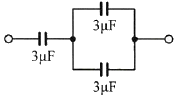
- 1.1
- 2.0
- 2.4
- 3.0
(정답률: 69%)
64. 다음 중 기동 토크가 가장 큰 단상유도전동기는?
- 분상기동형
- 반발기동형
- 셰이딩코일형
- 콘덴서기동형
(정답률: 56%)
65. 인디셜 응답이 지수 함수적으로 증가하다가 결국 일정 값으로 되는 계는 무슨 요소인가?
- 미분 요소
- 적분 요소
- 1차 지연요소
- 2차 지연요소
(정답률: 61%)
66. 계전기를 이용한 시퀀스제어에 관한 사항으로 옳지 않은 것은?
- 인터록 회로 구성이 가능하다.
- 자기 유지 회로 구성이 가능하다.
- 순차적으로 연산하는 직렬처리 방식이다.
- 제어결과에 따라 조작이 자동적으로 이행된다.
(정답률: 62%)
67. 직류전동기의 속도제어 방법 중 광범위한 속도제어가 가능하며 정토크 가변속도의 용도에 적합한 방법은?
- 계자제어
- 직렬저항제어
- 병렬저항제어
- 전압제어
(정답률: 45%)
68. 목표값이 미리 정해진 변화량에 따라 제어량을 변화시키는 제어는?
- 정치제어
- 추종제어
- 비율제어
- 프로그램제어
(정답률: 64%)
69. 어떤 회로에 220V의 교류 전압을 인가했더니 4.4A의 전류가 흐르고, 전압과 전류와의 위상차는 60°가 되었다. 이 회로의 저항성분(Ω)은?
- 10
- 25
- 50
- 75
(정답률: 44%)
70. 제어량을 어떤 일정한 목표값으로 유지하는 것을 목적으로 하는 제어는?
- 추종제어
- 비율제어
- 정치제어
- 프로그램제어
(정답률: 49%)
71. 그림과 같은 단위계단 함수를 옳게 나타낸 것은?
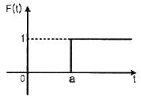
- u(t)
- u(t-a)
- u(a-t)
- u(-a-t)
(정답률: 69%)
72. 단일 궤한 제어계의 개루프 전달함수가
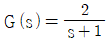
일 때, 입력 r(t)=5u(t)에 대한 정상상태 오차 ess는?- 1/3
- 2/3
- 4/3
- 5/3
(정답률: 44%)
73. 서보 전동기는 다음 중 어디에 속하는가?
- 검출기
- 증폭기
- 변환기
- 조작기기
(정답률: 55%)
74. 회전중인 3상 유도전동기의 슬립이 1이 되면 전동기 속도는 어떻게 되는가?
- 불변이다.
- 정지한다.
- 무부하 상태가 된다.
- 동기속도와 같게 된다.
(정답률: 65%)
75. 그림과 같은 블럭 선도와 등가인 것은?
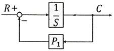
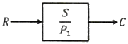
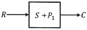
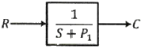
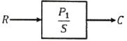
(정답률: 63%)
76. 회로 시험기(Multi Meter)로 측정할 수 없는 것은?
- 저항
- 교류전압
- 직류전압
- 교류전력
(정답률: 69%)
77. 도체의 전기저항에 대한 설명으로 틀린 것은?
- 같은 길이, 단면적에서도 온도가 상승하면 저항이 증가한다.
- 단면적에 반비례하고 길이에 비례한다.
- 고유 저항은 백금보다 구리가 크다.
- 도체 반지름의 제곱에 반비례한다.
(정답률: 60%)
78. 전동기 정역회로를 구성할 때 기기의 보호와 조작자의 안전을 위하여 필수적으로 구성되어야 하는 회로는?
- 인터록회로
- 플립플롭회로
- 정지우선 자기유지회로
- 기동 우선 자기유지회로
(정답률: 63%)
79. R-L-C 직렬회로에 t=0에서 교류전압 v=Emsin(wt+θ)[V]를 가할 때 이 회로의 응답유형은? (단,
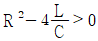
이다.)- 완전진동
- 비진동
- 임계진동
- 감쇠진동
(정답률: 49%)
80. 그림과 같은 회로에서 해당되는 램프의 식으로 옳은 것은?
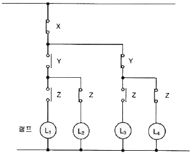
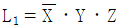
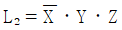
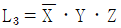
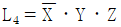
(정답률: 67%)